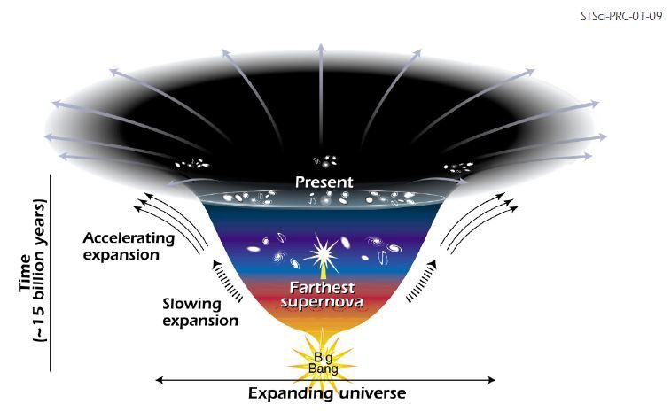
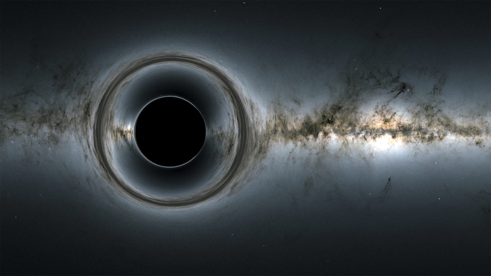
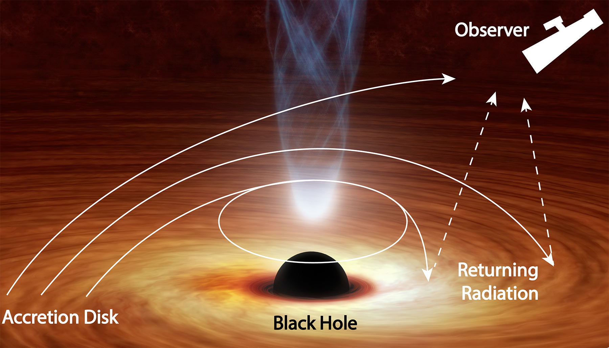

Nesta seção, exploramos conceitos mais complexos da astrofísica que lidam com fenômenos extremos
e com os limites do nosso entendimento sobre o universo, incluindo espaço-tempo em expansão,
buracos negros, distorção da luz e tempo, entre outros fenômenos.
Espaço-Tempo em Expansão
O universo está em constante expansão desde o Big Bang. O espaço-tempo não é estático; as galáxias
se afastam umas das outras à medida que o próprio tecido do universo se expande.

Buracos Negros
Buracos negros são regiões do espaço-tempo com gravidade tão intensa que nada pode escapar,
nem mesmo a luz. Afetam o espaço-tempo ao redor, causando curvatura gravitacional.

Distorção da Luz e Tempo
A massa e a energia distorcem o espaço-tempo, curvando trajetórias de luz e alterando a percepção do tempo,
fenômeno conhecido como lente gravitacional.

Matéria e Energia Escura
Matéria escura e energia escura são invisíveis diretamente, mas fundamentais para a estrutura
e evolução do universo. A matéria escura mantém galáxias coesas, enquanto a energia escura
acelera a expansão do cosmos.
Ondas Gravitacionais
Ondas gravitacionais são ondulações no espaço-tempo produzidas por eventos energéticos, como fusões
de buracos negros. Detectadas diretamente em 2015, permitem estudar fenômenos que não emitem luz.